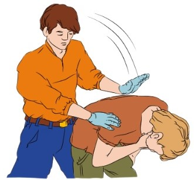
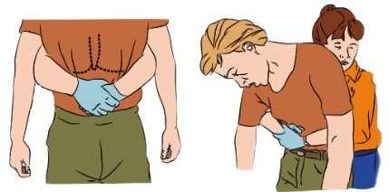

Задыхается, подавился
Данная ситуация происходит довольно часто. Поэтому важно как оказать человеку первую помощь.
Признаки: пострадавший производит судорожные дыхательные движения, не способен говорить, внезапно цвет кожи лица становиться синюшным, потеря сознания.
Алгоритм действий:
- Встаньте позади пострадавшего, наклоните его вперёд и основанием ладони нанесите 5 резких ударов между лопаток. После каждого удара проверяйте – не удалось ли устранить инородное тело. 
- Если инородное тело не удалено, следует провести следующие действия: встаньте позади пострадавшего, обхватите его руками и сцепите их в замок чуть выше пупка. Резко надавите. Повторите 5 раз. 
- Если пострадавший потерял сознание, вызовите скорую медицинскую помощь и приступайте к проведению сердечно-лёгочной реанимации. Следите за возможным появлением инородного тела во рту для того, чтобы своевременно удалить его. Продолжайте реанимировать до прибытия специалистов или до восстановления самостоятельного дыхания.
- После восстановления дыхания придайте пострадавшему устойчивое боковое положение. Контролируйте пострадавшего до приезда специалистов.